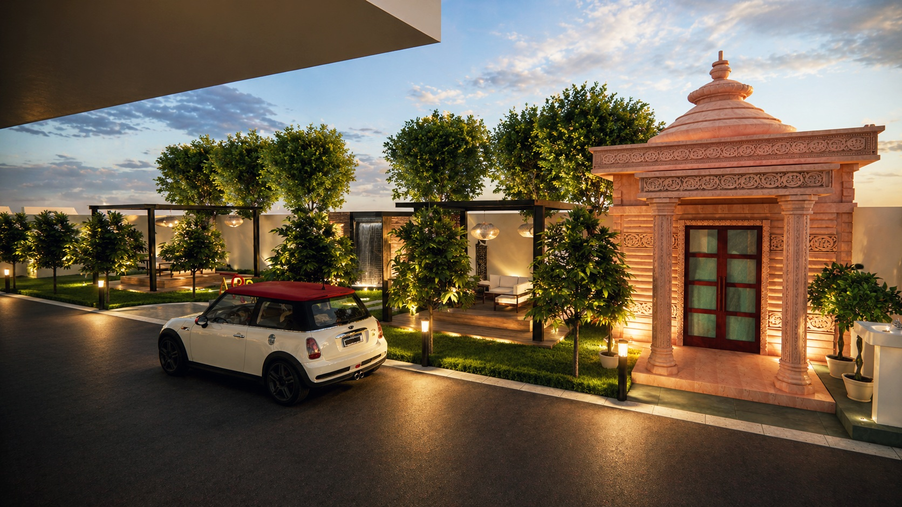
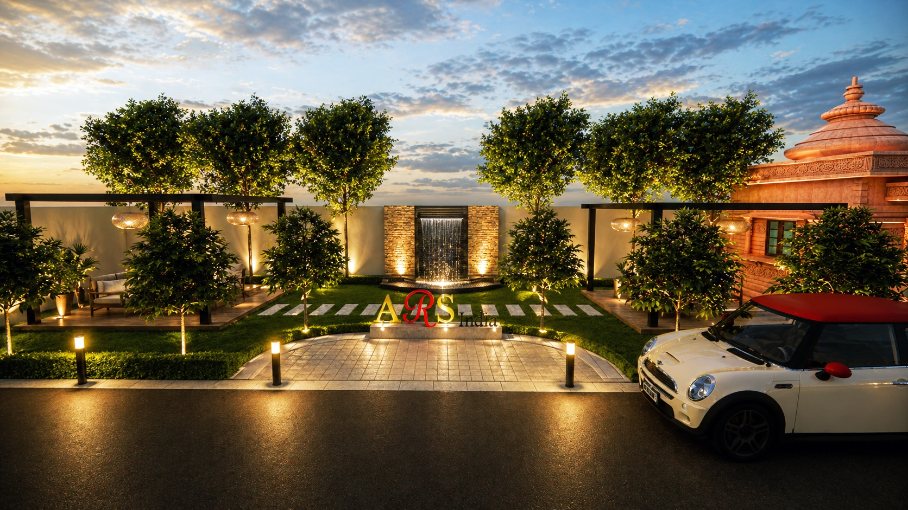
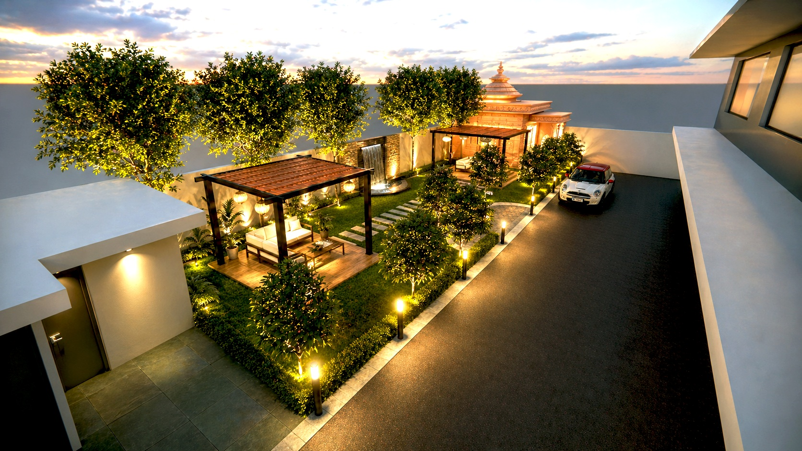
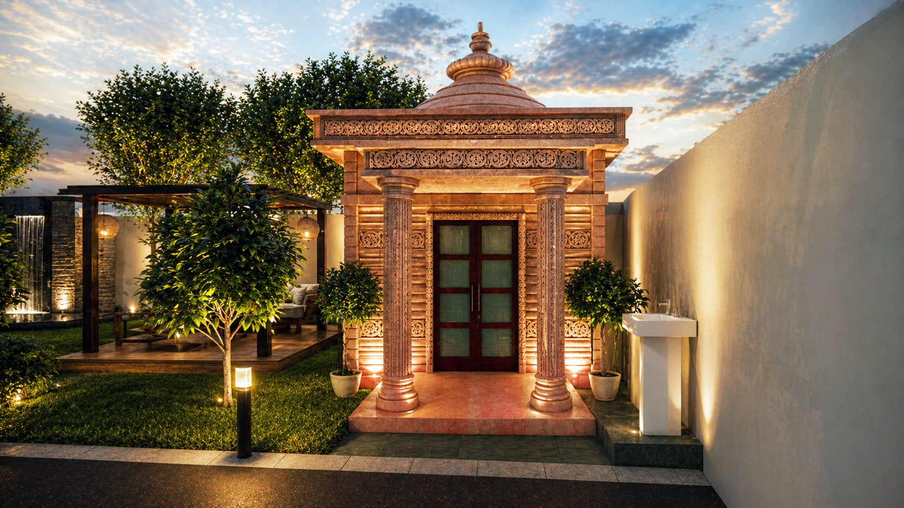
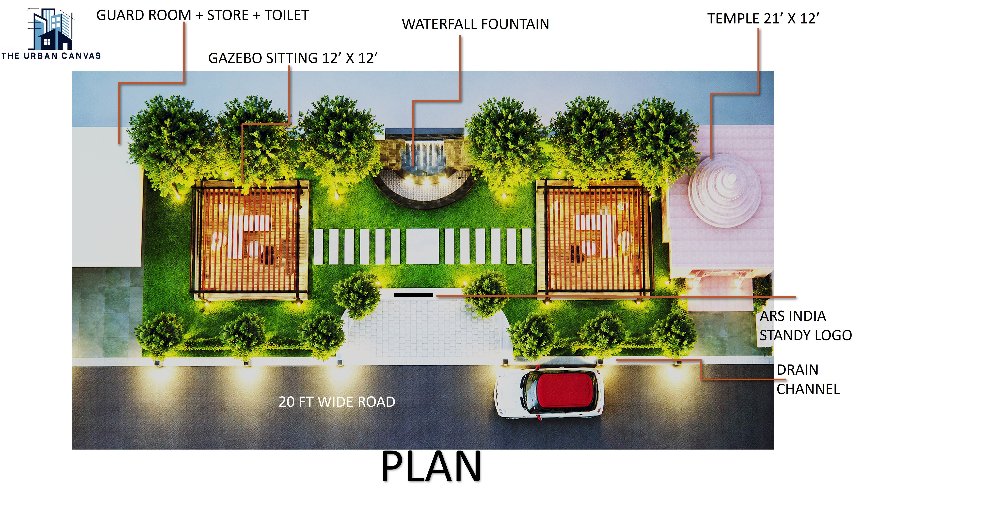
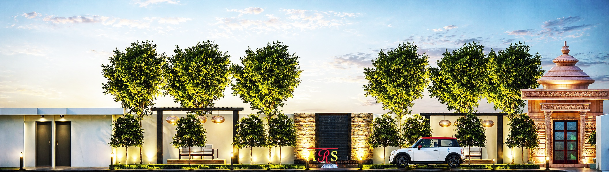

Contemporary Entrance Landscape
ARS Factory Front Lawn is a contemporary entrance landscape project located at Runakta, Agra, designed to create a defined and welcoming arrival experience for the industrial premises.
THE URBAN CANVAS was involved in the planning and 3D visualization of the landscape, developing the entrance plaza and visitor-oriented outdoor spaces into a cohesive architectural landscape proposal.
The design focuses on establishing a contemporary landscape identity at the factory entrance while creating functional outdoor spaces for visitors and users of the premises.
The landscape intervention is planned around the factory's entrance, creating a contemporary arrival zone that establishes a clear visual identity for the premises.
Entrance plaza planning forms a key component of the proposal, organizing the approach and creating a structured transition between the external approach and the industrial premises.
Visitor-centric outdoor spaces further contribute to the usability and experience of the entrance landscape while maintaining a contemporary architectural character.





The landscape design establishes a contemporary arrival experience appropriate to the identity of the industrial premises.
Entrance plaza planning provides a structured and visually defined arrival zone, while visitor-centric outdoor spaces enhance the usability of the landscape.
Through planning and 3D visualization, the proposed landscape is presented as an integrated entrance environment that combines functionality with a contemporary visual character.